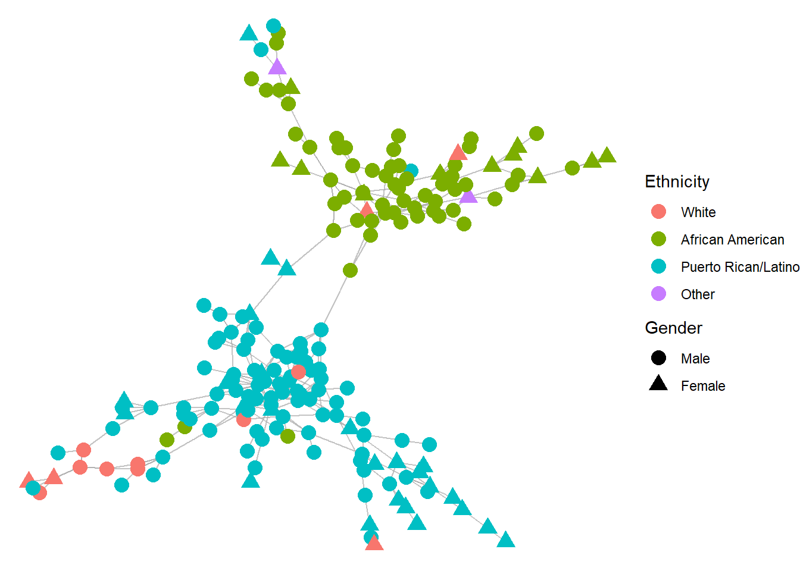

library(intronets)
library(igraph)
library(ggraph)
library(dplyr)8 Assortativity
9 Assortativity
Birds of a feather flock together. This is one of the most important insights about social interaction. Time and time again and across the globe, people display a tendency for connecting to others who are like themselves. This tendency for connecting to similar others is called assortativity. And when people actually form relationships or engage in interactions with similar others, we refer to this as homophily. By contrast, connecting with dissimilar others is referred to as heterophily.
Assortative tendencies may be the rule, but the study of different types of social contexts and relationships reveals variation in assortativity. For example, romantic relations in the United States tend to be racially and educationally homophilous, but also gender heterophilous. Furthermore, a social context might begin with strong assortative tendencies, only for those tendencies to weaken over time. An important goal of social science research is therefore to better understand the extent and dynamics of assortativity.
We will begin to examine these issues using data from the Hartford drug user network. First, let’s load the necessary packages.
Then we can load and inspect the drugnet data. The data are derived from a series of interviews and ethnographic observations with individuals who engaged in the use of illicit drugs. The connections represent close relationships among the users.
load_nets("drugnet.rda")
drug_connectIGRAPH f0ae330 DN-- 193 323 --
+ attr: name (v/c), ethnicity (v/n), gender (v/n)
+ edges from f0ae330 (vertex names):
[1] X1 ->X2 X1 ->X10 X2 ->X1 X2 ->X10 X3 ->X7 X4 ->X7 X4 ->X211
[8] X5 ->X134 X6 ->X152 X7 ->X3 X7 ->X4 X7 ->X9 X8 ->X107 X8 ->X117
[15] X9 ->X1 X9 ->X2 X9 ->X7 X10->X1 X10->X2 X11->X135 X11->X220
[22] X13->X216 X14->X24 X14->X52 X16->X10 X16->X19 X17->X64 X17->X79
[29] X18->X55 X18->X104 X18->X165 X19->X18 X20->X64 X20->X182 X21->X16
[36] X21->X22 X22->X21 X22->X64 X22->X107 X23->X20 X23->X22 X23->X64
[43] X24->X14 X24->X31 X24->X124 X27->X117 X28->X29 X29->X28 X30->X19
[50] X31->X24 X31->X32 X31->X124 X31->X149 X31->X235 X32->X31 X32->X87
+ ... omitted several edgesThe drug_connect object contains the largest connected component of the network. Note that we have information about ethnicity and gender for each individual. This information can be used to explore the role of assortativity in network relationships among drug users. Let’s visualize the network, highlighting the ethnic and gender attributes of the individuals.
ggraph(drug_connect, layout = "fr") +
geom_edge_link(color = "darkgrey", alpha = 0.7) +
geom_node_point(aes(color = as.factor(ethnicity), shape = as.factor(gender)), size = 4) +
labs(color = "Ethnicity", shape = "Gender") +
scale_color_discrete(labels = c("White", "African American",
"Puerto Rican/Latino","Other")) +
scale_shape_discrete(labels = c("Male","Female")) +
theme_void()
A few things stand out from the visualization. First two distinct groups are apparent from the visualization. Second, those two groups tend to be dominated by ethnic groups, with one group largely comprised of African American drug users and the other of Puerto Rican/Latino drug users. This tells us that assortatity by ethnicity is probably quite strong in this network. We can also observe some clustering by gender within those groups. So perhaps gender assortativity is present, though almost certainly not as strong as ethnic assortativity.
9.1 Estimating assortativity
Assortativity can be calculated by evaluating the number of ties between actors who share the same attribute (for example, both are women) relative to the number of ties between actors who have different attributes (for example, one is a woman and one is a man). This is referred to as a nominal form of assortativity. It measures ties based on homophilous matches on attributes. We can start by estimating assortativity based on gender.
assortativity_nominal(drug_connect, (as.factor(V(drug_connect)$gender)))[1] 0.2435105The results produce an assortativity coefficient that ranges between -1 and 1. A value of 1 indicates that all ties are homophilous. A value of -1 indicates that all ties are heterophilous. A value of zero tells us that there is an equal mix of homophilous and heterophilous connections. Here we can see a positive coefficient (0.24), which reveals a tendency toward relationships between individuals from the same gender. As such, we can say that gender assortativity is apparent in this network.
Now let’s examine ethnic assortativity.
assortativity_nominal(drug_connect, (as.factor(V(drug_connect)$ethnicity)))[1] 0.8017222The results again return a positive assortativity coefficient. The coefficient is substantially higher than what we saw for gender, implying that ethnic assortativity is considerably stronger in this network than is gender assortativity. This result is not surprising given what we saw from the visualization. Clearly relationship formation in this network is structured by ties among people from the same ethnicity.
This analysis raises an interesting question: is assortativity stronger among some ethnic groups relative to others? Let’s examine the homophilous ties and how they vary by the different ethnic groups. The code below identifies which of the edges is homophilous (ego and alter have the same ethnicity) and assigns that logical vector as an edge attribute.
edges <- ends(drug_connect, E(drug_connect), names = FALSE)
eth <- V(drug_connect)$ethnicity
E(drug_connect)$ethno_homophilous <-
eth[edges[,1]] == eth[edges[,2]]
table(E(drug_connect)$ethno_homophilous)
FALSE TRUE
36 287 You can see that out of all edges, 88 percent are between individuals from the same ethnicity. Now let’s see how this splits out by different ethnicities. The code below creates a new data frame that represents each edge across the rows. The ethnicity values are assigned to the egos and alters associated with each edge. Then the logical vector for homophily is added as a third column.
edge_df <- data.frame(
ego = eth[edges[,1]],
alter = eth[edges[,2]],
homophilous = E(drug_connect)$ethno_homophilous
)
head(edge_df) ego alter homophilous
1 1 1 TRUE
2 1 3 FALSE
3 1 1 TRUE
4 1 3 FALSE
5 1 1 TRUE
6 1 1 TRUEWe can see that the homophilous values are true when the ethnicity values for ego and alter are the same and are false when they are not. To see how homophily varies by ethnicity, we can collapse or aggregate this table to obtain the proportion of homophilous ties for each ethnic group (based on the column for ego). Before doing this, I will add a variable that indicate what ethnicity each number refers to.
edge_df <- edge_df |>
mutate(ego_ethnicity = case_when(
ego == 1 ~ "White",
ego == 2 ~ "African American",
ego == 3 ~ "Puerto Rican/Latino",
TRUE ~ "Other")) |>
mutate(ego_ethnicity = factor(ego_ethnicity,
levels = c("White",
"African American",
"Puerto Rican/Latino",
"Other")))
aggregate(homophilous ~ ego_ethnicity, edge_df, mean) ego_ethnicity homophilous
1 White 0.5217391
2 African American 0.9173554
3 Puerto Rican/Latino 0.9371429
4 Other 0.0000000The results show that assortativity is especially strong among African American and Puerto Rican individuals in the network, as over 90 percent of their ties are homophilous. White individuals in the network have roughly equivalent numbers of homophilous versus heterophilous ties (52 to 48 percent, respectively). Because there is only one individual with an ethnicity coded as “Other,” it is impossible for that person to have a homophilous tie and therefore their proportion homophilous ties is 0.
9.2 Assortativity for continuous attributes
We can also conceive of assortativity based on continuous variables. In these instances, individuals might not have a tendency to exactly match with an alter attribute, but instead to connect with an attribute that is close to their own attribute. For example, age is a continuous attribute that is often subject to homophily, especially when it comes to marriage. When people get married, they are often close in age, not necessarily the exact same age. The continuous measurement of age allows us to evaluate assortativity by its intensity. For example, a marriage to someone who is within two years of your own age is certainly more homophilous than marrying someone who is twenty years older!
While the drug users network does not contain any continuous attribute variables, we can estimate one in order to demonstrate the calculation of continuous assortativity. Below we will identify the degree for each individual in the network and assign that score as a vertex attribute. Then we can assess the extent to which people in this network prefer to connect with others who have similar degree scores.
V(drug_connect)$degree <- degree(drug_connect)
assortativity(drug_connect, V(drug_connect)$degree)[1] 0.02227093Here we can see that the value is close to zero, which indicates that assortativity based on degree is not a defining feature of this network. People in this network sometimes connect with others who have similar degree values and sometimes they do not.
Assortativity is a graph-level characteristic revealing the tendency to connect with similar others. We have shown how to estimate this feature, which can be used to examine the tie formation mechanisms – in this case, ethnic homophily matters more for tie formation than gender or degree homophily. It also can be applied across contexts to see how assortativity varies across different types of social networks. There are more powerful statistical tools for assessing assortativity while also conditioning on other network features. While we won’t cover those procedures here, those who are interested in these advanced techniques should explore further tutorials on exponential random graph models (or ERGMs).
9.3 References
For more on the drugnet data…
Weeks, Margaret R., Scott Clair, Stephen P. Borgatti, Kim Radda, and Jean J. Schensul. 2002. “Social Networks of Drug Users in High-Risk Sites: Finding the Connections.” AIDS and Behavior 6(2):193–206.
Weeks, Margaret R., Mark Convey, Julia Dickson-Gomez, Jianghong Li, Kim Radda, Maria Martinez, and Eduardo Robles. 2009. “Changing Drug Users’ Risk Environments: Peer Health Advocates as Multi-Level Community Change Agents.” American Journal of Community Psychology 43(3):330–44.
For more on assortativity and homophily…
Lada A. Adamic and Eytan Adar. 2003. Friends and neighbors on the Web. Social Networks, 25(3):211-230.
McPherson, Miller, Lynn Smith-Lovin, and James M. Cook. 2001. “Birds of a Feather: Homophily in Social Networks.” Annual Review of Sociology 27(1):415–44.
M. E. J. Newman 2003. Mixing patterns in networks, Phys. Rev. E 67, 026126
M. E. J. Newman 2002. Assortative mixing in networks, Phys. Rev. Lett. 89, 208701